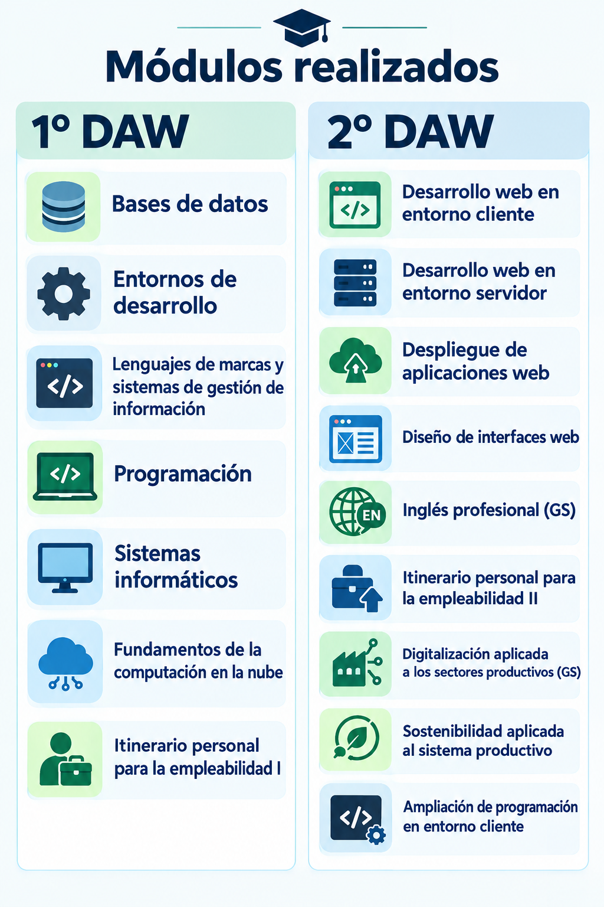

Información sobre los estudios realizados en el IES Tetuán de las Victorias

Yo en el año 2025 me matriculé en el módulo de Desarrollo de aplicaciones web, en el cual se imparten una serie de módulos en los dos años que tiene el módulo, a continuación voy a explicar de que va cada módulo, y como me va a servir en mi vida profesional.
En el primer curso vemos asignaturas como Bases de datos, esta asignatura te enseña como se organizan los diferentes archivos y como las empresas guardan sus datos. En entornos de desarrollo, puedes comprobar las diferentes aplicaciones en las que puedes escribir código y comprobar si funciona de forma correcta. En lenguajes de marcas, realizamos proyectos con diferentes lenguajes como HTML5 y CSS3 además de JavaScript.
En programación realizas programas con mayor dificultad según va avanzando el curso, eso lo hace más interesante. En sistemas informáticos, nos informamos y ejecutamos varias máquinas virtuales, y realizamos algunas prácticas con los comandos de la terminal de Linux. En fundamentos de computación en la nube, aprendimos a utilizar y hacer prácticas a través de Amazon web services. Por último en Itinerario personal para la empleabilidad aprendimos lo importante que son las medidas de seguridad a la hora de ir a una empresa.
Ahora en el segundo curso gracias a las bases del primero ya podemos avanzar de una manera más fluida en asignaturas como desarrollo web en entorno cliente y entorno servidor, ya que se requieren algunas bases de programación, en despliegue de aplicaciones web estamos trabajando con diferentes máquinas virtuales además de comandos desde la terminal.
En diseño de interfaces web estamos aprendiendo a realizar prototipos en Figma, además de utilizar lenguajes de marcado y de diseño como HTML5 y CSS3. En inglés profesional, estamos aprendiendo diversos conocimientos relacionados con la informática.
En ampliación de programación en entorno cliente vamos a ver desde el diseño de las interfaces hasta lenguajes de programación, en itinerario personal para la empleabilidad II, entendemos la importancia de realizar un buen currículumn, además de la carta de presentación y como comportarse en una empresa.
Por último nos encontramos dos asignaturas tanto sostenibilidad como digitalización en las que aprendemos como tener un planeta más sostenible y como avanzan los recursos informáticos en base a los años que van pasando. Todo esto en un futuro nos va a ser muy útil, ya que cada asignatura proporciona una buena base de conocimientos diferentes para ayudarnos en el futuro.